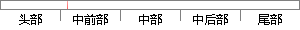

在声纹识别样本模型的训练和特定说话人的识别都是基于所选的特征参数进行的。
片段位置图

相似结果|
1
原句片段：在声纹识别样本模型的训练和特定说话人的识别都是基于所选的特征参数进行的。
相似片段 1：在应用上与其 他如指纹识别、掌形识别、虹膜识别等...声纹识别系 统,并通过三种特征参数方案,对系统进行...说话人样本模型的训练和特定说话人的识别都是基于所...
|
※ 片段修改建议 ※
近似词参考：- 模型：模子
- 训练：练习
- 说话：措辞 语言
- 识别：辨认
- 进行：举行
系统自动生成语句：在声纹辨认样本模子的练习和特定措辞人的辨认都是基于所选的特征参数举行的。
注：本片段修改建议为系统自动生成，仅供参考。